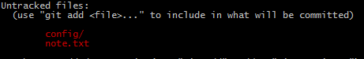

我们开发项目时，会有一些文件不需要添加到版本库，不需要被git管理，这时我们就需要git的忽略文件了
echo ''>.gitignore
git add .gitignore
git commit -m 'init ignore'
我们创建了一个名为.gitignore的文件在根目录下，这个文件一定要添加到版本库
我们在跟目录下创建config文件夹，里面创建一个main.js，在根目录下创建note.txt文件
mkdir config
echo ''>config/main.js
echo ''>note.txt
这时运行git status

还是提醒有修改，是因为没有去配置.gitignore
配置如下
config
note.txt
我们修改了.gitignore，需要把它提交
git add .gitignore
git commit -m 'update ignore'
再次运行git status,，正常了
GitHub已经为我们准备了各种配置文件，https://github.com/github/gitignore